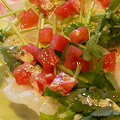
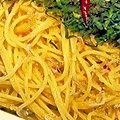

オリジナルレシピ
タコのカルパッチョ

タコのカルパッチョ たこは低脂肪、低カロリーなだけでなく、コレステロールの上昇を抑える働きのあるタウリンが含まれます。
レモン果汁などさわやかな酸味、セロリやかいわれ菜などの香りのある野菜を上手に加えると、塩分を抑えてもおいしいおつまみになります。
たこのうまみを引き立てる、さわやかな青じそペーストはパスタやソテーのソースにも使えて便利な一品です。
ニンニクや香草の香りが特長のソースは、素材の味をひき立てるビールや辛口の白ワインにピッタリ！スパークリングワインと合わせて、ちょっぴり気の効いた前菜としてもおすすめです。
しらすのペペロンチーノ

しらすのペペロンチーノ おうちでのランチはお手軽にすませたいですよね♪かつ、美味しければなおうれしい！今回は、ごはんの友のしらすを使った簡単パスタ、しらすのペペロンチーノをご紹介します。
味付けはしらすの塩気とパスタの茹で汁を使います。ソースをあらかじめ作って茹で上がったパスタを絡めるので失敗知らずですよ。
ペペロンチーノは基本の素材がダイレクトに出ます。スパゲティ、オイル、塩、にんにく、唐辛子。全てが上質だと出来上がりも素晴らしく違いますよ。
詳細を見る